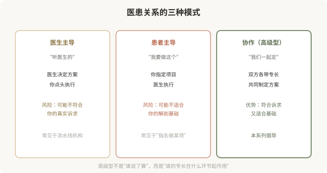
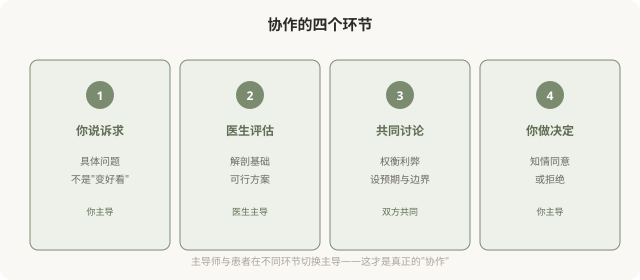

先说结论：高级型医美中，你和医生是“审美合伙人”，共同参与决策，而非一方主导。庸俗型的医患关系往往是“医生/咨询师做主，你被动接受”或“你强硬指定，医生执行”；高级型则是双方带着各自的专长（你懂自己，医生懂医学和解剖）共同制定方案。理解并主动建立这种协作关系，是走向高级型的关键一步。
三种医患关系模式

协作的基础，各自的专长
你的专长：
- 你最了解自己的诉求，想解决什么问题、能接受到什么程度。
- 你最了解自己的生活方式，工作性质、社交需求、能承受的恢复期。
- 你最了解自己的身体反应，既往治疗效果、过敏史、愈合情况。
医生的专长：
- 医生懂解剖和医学，什么方案安全、什么方案有效。
- 医生懂美学和技术，什么结果自然、什么结果协调。
- 医生懂材料和并发症，什么产品适合你、出了问题怎么处理。
协作的意思，是让各自的专长在合适的环节发挥作用，你来描述诉求和边界，医生来评估可行性和方案，双方共同确认。
协作怎么做

协作型医生的几个特征
识别协作型医生，可以看几个信号：
- 他先听你说，而不是先推荐项目。
- 他解释“为什么”，而不只是“做什么”。
- 他会说“不”，当你想要的方案不适合你。
- 他给你选择，而不是“只有这一种方案”。
- 他记录你的诉求和决策，作为长期档案。
这样的医生，倾向于带你走向高级型。相反，“咨询师主导全程、医生只执行”“打包套餐、不允许讨论”的机构，往往导向庸俗型。
协作的前提，你的准备
协作不是医生单方面的责任，你也需要带着准备来：
- 梳理诉求：具体到“想解决什么问题”，而不是“想变好看”。
- 了解基础：自己的解剖特点、既往治疗、健康状况。
- 设定边界：能接受的恢复期、风险、剂量、预算。
- 准备问题：面诊前写下想问的，避免被引导。
- 冷静期：不在第一次面诊当场决定，留时间思考。
一个有准备的患者，更能与医生形成高质量的协作。
协作≠患者指定方案
需要区分“协作”和“患者主导”：
- 协作：你描述诉求和边界，医生评估方案，双方讨论后共同决定。
- 患者主导：你直接指定“我要做这个项目、用这个材料”，医生执行。
协作不是患者替代医生做医学判断。当你强行指定某个不适合你基础的方案，医生若不劝阻直接执行，这恰恰不是高级型，因为高级型尊重的是医学依据 + 你的个体情况，不是“顾客永远正确”。
一个反思
高级型医美的医患关系，本质是两个成年人基于各自专长的合作，你对自己的身体和诉求负责，医生对医学判断负责，双方共同对结果负责。这种关系比“听医生的”或“我要做这个”都更成熟，也更能带来耐看的结果。下次面诊时，不妨把自己定位为“审美合伙人”，而非“被动接受者”或“强势决策者”，这可能是走向高级型最重要的心态转变。
本文用于健康教育与审美思辨，明确倡导高级型的协作医患关系；具体医美决策须结合个体情况与具备资质的医师面诊。